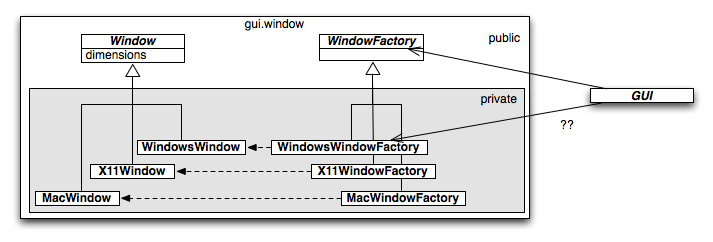
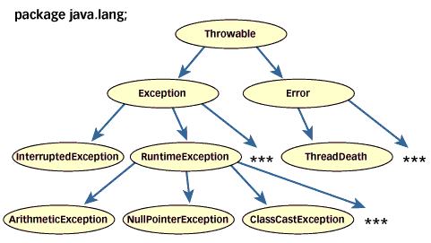

Lecture 9: Effective Object-Oriented Programming (OOP), Part II
Why Are Objects Interesting?
Because managing complexity is one of our biggest challenges. Mentally, we object encapsulation in our daily lives to avoid being overwhelmed by sensory input. Object-Oriented Programming tries to apply that same strategy to managing software complexity.
However, like any tool, objects can be used in situations where their drawbacks outweigh their benefits.
Some History
| Year | Event | Features | Notes |
|---|---|---|---|
| 1967 | Simula | Objects, classes, subclasses, virtual methods, coroutines, discrete event simulation, garbage collection. | First OO Language. |
| 1972 | Smalltalk | Object-oriented, dynamically typed, reflective. | First public version in 1980 |
Some History (cont.)
| Year | Event | Features | Notes |
|---|---|---|---|
| 1983 | C++ | Classes, virtual functions, operator overloading, multiple inheritance, templates. | Most widely used OO language in the 90s. (?) |
| 1986 | Eiffel | Design by contract, command-query separation, uniform-access principle, single-choice principle, open-closed principle, and option-operand separation | Very innovative. Still used in some industries, esp. in Europe. |
In 1984, Apple introduced the Macintosh, the first popular copmuter with a Graphical User Interface. GUIs were quickly seen as ideal for OOP.
Some History (cont.)
| Year | Event | Features | Notes |
|---|---|---|---|
| 1995 | Java | “Simplified C++”, plus byte code running on a virtual machine. | Rapid adoption with the Internet. |
| 1995 | JavaScript | Prototype-based, scripting, dynamically and weakly typed, first-class functions, closures, higher-order functions. | Also considered a functional programming language. Inspired by Scheme. |
Some History (cont.)
| Year | Event | Features | Notes |
|---|---|---|---|
| 2003 | Scala | Object-oriented and functional programming. | Runs on the JVM and .NET CLR. |
| 2007 | Clojure | Lisp on the JVM. | Innovative approaches to mutable state. |
The rise of functional programming, with some languages taking a hybrid object-functional approach, like Scala, OCaml, and JavaScript, while other languages are discounting the value of objects, like Clojure.
Eiffel Innovations
- Design by Contract: Discussed last lecture.
- Command-Query Separation:
- Uniform-Access Principle:
- Single-Choice Principle: (a.k.a. Don’t Repeat Yourself)
- Open-Closed Principle:
- Option-Operand Separation: (We won’t discuss this one.)
Command-Query Separation
To keep each “piece” of code as simple as possible, each object and function should do only one “thing”. This is the Single Responsibility Principle, the “S” in the SOLID principles.
Command-Query Separation (cont.)
If a function executes a “command” and it returns a value (“query”), it’s doing two things. Hence, you should have separate command and query functions:
- Command: Do something, i.e., update state, but don’t return values. (It might return a “success” indicator…)
- Query: Return a result, but don’t alter state (at least not the visible state – it may update an internal cache, for example.)
Example: JavaBean getters and setters.
CQ Separation: Counterexamples
Builders:
import org.chicagoscala.awse.domain.finance._ val criteria = CriteriaMap(). withInstruments(instruments). withStatistics(statistics). withStart(start). withEnd(end)
Functional Operations:
// Generate a sequence of strings: "2", "4" (1 to 10) filter (_ % 2 == 0) map (_.toString) take 2 // ...immutable.IndexedSeq[java.lang.String] = Vector(2, 4)
Uniform-Access Principle
case class Person(name:String, age: Int)
...
val dean = Person("Dean Wampler")
println(dean.name)
Am I calling a method name or accessing a “bare” name field??
Uniform-Access Principle (cont.)
The caller doesn’t care whether a method is invoked or a bare field is accessed.
The implementer might want to start with a simple bare field access, then eventually replace it with a method call (e.g., to do lazy initialization, etc.).
The uniform-access principle means the caller’s code doesn’t have to change, because the syntax is identical. (The code might need a recompile).
Uniform-Access Principle (cont.)
Note that the JavaBean convention for getters and setters does not support this principle!
class Person {
private String name;
public String getName() { return name; }
public Person(String name) { this.name = name; }
}
...
val dean = Person("Dean Wampler")
println(dean.getName());
// very different from:
// println(dean.name);
Single-Choice Principle
This is now more commonly known as DRY, Don’t Repeat Yourself. It means, don’t write code that duplicates the work of other code.
- Leads to bloat.
- Each version must be maintained, kept in sync.
- It’s very common for the versions to “grow” out of sync, leading to bugs.
Good Object Design: Lesson 4
Don’t Repeat Yourself is more valuable than it might sound at first. Removing duplication pays dividends in terms of code quality, size, and maintainability over the life of a project.
Open-Closed Principle
The “O” in the SOLID principles.
How can we add new behavior to the system without editing existing code? Philip Wadler called this the Expression Problem.
If we edit existing code,
- we must retest, redeploy…
- we force clients of the code to modify their code and retest, redeploy…
Open-Closed Principle (cont.)
Inheritance is a classic way to do this. Our windowing example demonstrates this:
We could add iPhone and Android classes, for example, without changing any existing classes… in principle…
Open-Closed Principle (cont.)
In practice, when you introduce new subclasses, the existing abstractions may not fully support their needs, forcing some changes on the existing types. Hopefully, that’s rare.
Open-Closed Principle (cont.)
We’ll return to this principle when we talk about Type Classes in functional programming.
Good Object Design: Lesson 5
In long-lived projects, take the time to factor out abstractions so you can exploit the Open-Closed Principle. It will minimize the maintenance effort over time.
Strong Dependencies
Last time, we talked at length about encapsulation. We also mentioned that it helps minimize dependencies (coupling) between modules. Some of the principles we just discussed also do this. Let’s explore dependencies some more.

Is it bad if GUI depends on MacWindowFactory??
gui.windowing
package gui.windowing {
abstract class Window(dimensions: Dimensions) {...}
abstract class WindowFactory {
def make(properties: Properties): Window
}
protected[gui] package mac {
MacWindow(...) extends Window(...) {...}
object MacWindowFactory extends WindowFactory {
def make(properties: Properties): Window = {...}
}
}
protected[gui] package windows {
WindowsWindow(...) extends Window(...) {...}
...
}
...
}
Other Modules
BAD:
object MyApp {
def makeNewWindow(properties: Properties) {
val window = mac.MacWindowFactory.make(properties)
// Other Mac-specific calls...
}
}
GOOD:
object MyApp {
def makeNewWindow(properties: Properties) {
val window = WindowFactory.make(properties)
// Other generic calls...
}
}
Why Are Strong Dependencies Bad?
- Testing
- Maintenance
Testing
If I want to test a module, I have to set up all its dependencies. That’s painful if the dependencies are concrete objects like database connections, user interfaces, external processes, etc.
For example, I could only test the “bad” version of MyApp.makeNewWindow with a Macintosh. Also, in general, creating GUI widgets is much slower than avoiding real UI calls.
But if makeNewWindow depends only on abstractions (e.g., Java interfaces), I can use a stub implementation of WindowFactory that makes unit testing easy and fast.
(We’ll revisit testing in a few weeks.)
Maintenance
If you have several other teams that depend on the implementation of MacWindowFactory, you can’t change it without pain:
- You have to plan with those teams when to introduce the changes.
- You and they have to coordinate the changes.
- They have to unit test their changes in isolation.
- The organization has to integration test the changes.
- All the changes need to be deployed in a coordinated manner.
Good Object Design: Lesson 6
Keep dependencies to a minimum.
- Depend only on abstractions.
- Depend on a minimum number of modules.
Inheritance Is A Strong Dependency
It’s important to note that inheritance is a form of strong dependency. (About the strongest in fact.) The advantages vs. disadvantages need to be weighed.
Inheritance Is A Strong Dependency (cont.)
Advantages:
- Reuse of state and behavior.
- Grouping of “logically-similar” things.
Disadvantages:
- Any change to parent may require changes to child.
- Proper implementations of
clone,equals,hashCodechallenging. - Can’t “abstract over” the dependency.
Like any form of dependency, it should be used sparingly.
Composition vs. Inheritance
Compare the following approaches:
abstract class Addressable( ..., val city:String, val state:String, val zip:ZipCode) case class Person(name:String, age: Int) extends Addressable
Does Person behave as an Addressable? What does that mean?
class Address( ..., val city:String, val state:String, val zip:ZipCode) case class Person(name:String, age: Int, address: Address)
Makes more sense to say Person has an Address.
Composition vs. Inheritance (cont.)
Not only does “Person has an Address” make more sense, but now we can treat address as an abstraction. For example, we can pass in the correct kind of address appropriate for the country the person lives.
Less Trivial Example:
package graphics {
// Abstraction
trait Rectangle {...}
}
package opengl {
// Concrete implementation.
class OGLRectangle(val lowerLeft: Point, val upperRight: Point)
extends graphics.Rectangle {...}
}
package gui.windowing.x11 {
// Inherits concrete implementation
class X11Window(properties: Properties)
extends opengl.OGLRectangle(...) {...}
}
Versus:
package graphics {
// Abstraction
trait Rectangle {...}
}
package opengl {
// Concrete implementation.
class OGLRectangle(val lowerLeft: Point, val upperRight: Point)
extends graphics.Rectangle {...}
}
package gui.windowing.x11 {
// Uses an object implementing abstraction.
class X11Window(properties: Properties, rect: Rectangle) {...}
}
We compose the X11 window with an implementing rectangle.
Composition vs. Inheritance (cont.)
So, dependency on abstractions is the weakest form of dependency. Therefore, we should prefer composing behavior over inheriting it.
Object Properties:
Every property is a reference to another object (as long as you consider, numbers, booleans, etc. objects…)
Mixins
An alternative to using properties is to use mixins, which are like standalone objects (they have their own behavior: state and/or functions), but they are designed to be mixed into other objects using the inheritance mechanism, but with weaker coupling.
Most of the time, these behaviors will be orthogonal.
Example: Logging Mixin
package utils {
trait Logging {
def error(message: String) = {...}
def warning(message: String) = {...}
def info(message: String) = {...}
}
}
package gui.windowing.x11 {
// Make all windows with logging mixed in:
object X11WindowFactory extends WindowFactory {
def make(properties: Properties) = {
val dimensions = // get dimensions from properties
new X11Window(dimensions) with utils.Logging
} // returns window WITH Logging mixed in!
}
}
Mixins (cont.)
Other times, the mixin behavior may be closely linked to the class.
Example: How could you model the M:N relationship between windowing toolkits (e.g., Xll, Windows, Aqua, etc.) and the low-level graphics APIs (e.g., OpenGL, DirectX, Quartz, etc.)
Joining GUI and Graphics Libs
package graphics { // for any graphics library...
trait Rectangle { // abstraction of rectangle.
val lowerLeft: Point // traits don't have constructors,
val upperRight: Point // ... so we declare "fields" here.
...
}
}
package opengl { // OpenGL-specific "driver"
trait OGLRectangle extends graphics.Rectangle {...}
}
package gui.windowing.x11 {
// "self type" declaration:
// X11Window will be composed with a Rectangle...
abstract class X11Window(properties: Properties) {
self: Rectangle =>
...
}
}
Self Types in Scala
Self type declarations, like this:
abstract class X11Window(properties: Properties) {
self: Rectangle =>
...
}
are “promises” that any concrete class eventually created from X11Window will mix in a Rectangle trait. In byte code, it is identical to X11Window extends Rectangle, but avoids the is a trap (Liskov Substitution Principle).
Self Types in Scala
In other words, we could write it this way:
abstract class X11Window(properties: Properties)
extends Rectangle {
...
}
However, that would imply that X11Window is substitutable for Rectangle (Liskov), which is a poor inheritance relationship.
Self types emphasize instead that we will get the “Rectangle” behavior we need through a mixin.
Instantiating the Objects
So, to create actual objects the factory method would do this:
object X11WindowFactory extends WindowFactory {
def make(properties: Properties) = {
val dimensions = // get dimensions from properties
new X11Window(dimensions) with utils.Logging with OGLRectangle
{
val lowerLeft = // get it from the dimensions
val upperRight = // get it from the dimensions
}
} // returns window WITH Logging WITH OGLRectangle!
}
Note: this technique is called the Cake Pattern (also discussed here and used to implement the Scala compiler itself).
Counterexample: Exception Hierarchies
The Java exception hierarchy (and similar hierarchies in many other languages) is a good use of a deep inheritance hierarchy.

(credit: http://www.artima.com/designtechniques/exceptions.html)
Counterexample: Exception Hierarchies
Why? Because this hierarchy forms a classification tree, similar to the way that all life on Earth is classified into the Phylogenetic Tree.

Counterexample: Exception Hierarchies
However, this only works if this hierarchy is very stable.
Good Object Design: Lesson 7
Prefer composition over inheritance.
Problems with Objects
Objects offer benefits, but they also pose theoretical and practical problems.
- Cloning Objects
- Determining Equality
- Typing of Object-Oriented Code
- Unrestrained Mutability
- Reusability
Cloning Objects: Two Strategies
- Shallow Copy: Parts are shared. References to other “sub-objects” in the new copy point to the same sub-objects in the original object.
+ Faster cloning.
- Changes to sub-objects affect both objects, so state is harder to control. - Deep Copy: Sub-objects are also copied, so the new and old objects are completely independent.
- Expensive cloning.
+ Easier to control state of each object separately.
This is a language (or API) design decision. Needs to be consistently applied!
Cloning Objects (cont.)
Note that the “state problem” goes away if the objects are immutable!
This fact is exploited by software transactional memory implementations (e.g., subtree sharing) that we discussed earlier in the course.
Recall that modifications are implemented by creating new objects where the “invariant” parts are shared. No object is ever modified directly.
Determining Equality
It’s actually hard to write a correct equality operator. Let’s talk about Java, as a representative example.
The Signature of equals
A common mistake is to get the signature wrong. Suppose I define equals for the MacWindow class we discussed earlier:
boolean equals(MacWindow window) {...} // WRONG!!
boolean equals(Object other) {...} // Right!
Why? Because in Java collections, all objects are Object, so the run time won’t look for the method that takes an MacWindow argument. Rather, it will use the “closest” equals method that takes an Object argument, perhaps the one on Object itself.
Overlooking hashCode
You have to keep hashCode consistent with equals:
If equals says that two objects are equivalent, then hashCode applied to each object should return the same value.
The default Object.hashCode simply uses the object’s reference address. So, if you put an object in a HashSet for example, then test for its presence using an equal but different object, you might (or not) get a false negative, depending on whether or not the addresses of the two objects both get hashed into the same bucket!
Mutability: equals, hashCode
This is related to the previous problem with HashSet and similar collections. Suppose you create an object, put it in a HashSet, then mutate the object. You might find that the HashSet no longer believes it has the object!
This is because the HashSet uses the value of hashCode to determine the correct bucket for the object. However, if the object is mutable, then the value returned by hashCode changes, so HashSet might start looking in the wrong bucket for the object!
equals Is an Equivalence Relation
Your equals must satisfy the following properties:
- Reflexive: for any non-null value
x, the expressionx.equals(x)should return true. - Symmetric: for any non-null values
xandy,x.equals(y)should return true if and only ify.equals(x)returns true. - Transitive: for any non-null values
x,y, andz, ifx.equals(y)returns true andy.equals(z)returns true, thenx.equals(z)should return true.
equals Is an Equivalence Relation (cont.)
- Consistent: for any non-null values
xandy, multiple invocations ofx.equals(y)should consistently return true or false, provided no information used in equals comparisons on the objects is modified. - Nulls: For any non-null value
x,x.equals(null)should return false.
equals Is an Equivalence Relation
That doesn’t sound hard, but a classic mistake is to allow objects to be considered equal if the values of their common supertypes are equal.
// Scala syntax now...
class Point2D(val x: Double, val y: Double) {
override def equals(other: Any): Boolean = other match {
case p: Point2D => x == p.x && y == p.y
case _ => false
}
}}
class Point3D(x: Double, y: Double, val z: Double)
extends Point2D(x, y) {
override def equals(other: Any): Boolean = other match {
case p: Point3D => x == p.x && y == p.y && z == p.z
case _ => false
}
}}
equals Is an Equivalence Relation
val p2 = new Point2D(1, 2) val p3 = new Point3D(1, 2, 3) p2 == p3 // true p3 == p2 // false!
Not only is symmetry broken, but this can lead to strange affects in collections, again.
(It also begs the question, is Liskov Substitutability satisfied by
Point2D <: Point3D?)
equals Is an Equivalence Relation
You could implement a fix for the symmetry by making the relation a == b || b == a, but this breaks transitivity:
val p2 = new Point2D(1, 2) val p33 = new Point3D(1, 2, 3) val p34 = new Point3D(1, 2, 4) p2 == p33 // true p33 == p2 // true, if we "fix" symmetry (see exercises) p33 == p2 // true p2 == p34 // true p33 == p34 // false!
Equals
So, in most cases, you must also require the objects to be of the same type. However, than can be cases where a subtype doesn’t add any more state to the parent type. (We’ll see an example later in the lecture.) Objects of these types could be compared.
However, it’s still a questionable idea. Perhaps there shouldn’t be two different types after all?
See here for more details on show to implement this case.
Typing of Object-Oriented Languages
Creating a sophisticated and “sound” type system in object-oriented languages is harder than in a comparable functional language, because of subtyping. Java didn’t really try very hard. Scala goes quite far, but it takes some effort to master the type system (which is Turing complete, by the way).
Compare Haskell to Scala. Haskell infers most type information, while Scala is limited to local type inference, which is why the types of function arguments must be declared.
Type “Invariance” Under Transformations
Another common problem related to subtyping is what I’ll call the desire for type invariance under transformations. Here’s an example to describe what this means.
Suppose you want to map over a Scala List. Conveniently, List inherits a map method implementation that is defined in one of its ancestor types, TraversableLike.
Here’s the problem, I would like the result to also have the type List, not TraversableLike or some other lowest-common denominator type. However, I definitely don’t want TraversableLike to know about List or another other subtype.
Type “Invariance” Under Transformations
In a lot of strongly-typed object-oriented languages, there is no built-in way to get a new collection with the same type as the original (with the type parameter for the List possibly changed). Scala pre-2.8 also didn’t do this. However, Scala 2.8 exploits implicit parameters and special factory objects to do this.
Type “Invariance” Under Transformations
We want something “equivalent” to this map method signature for List:
class List[A] {
def map [B] (f: (A) ⇒ B): List[B]
...
}
Here is the actual signature for TraversableLike.map
trait TraversableLike {
def map [B, That] (f: (A) ⇒ B)(
implicit bf: CanBuildFrom[Repr, B, That]) : That
...
}
Type “Invariance” Under Transformations
Note there are two argument lists and the second one takes a single implicit parameter. Recall that the user doesn’t have to specify these parameters if a suitable object is in scope. Here, CanBuildFrom is supplied by the Scala library. It knows how to build a List[B] object (which is what That represents), based on the current “representation” Repr and the type parameter B.
Static Types vs. Real-World Variability
It is sometimes said that “objects model the real world”. One problem with this view is that real world objects are not always fixed and unchangeable. They can be more fluid, depending on context and changes over time.
However, class-based and especially statically-typed languages don’t reflect this fluid nature of reality. Prototype languages and languages with “open types” are more accommodating to this kind of change.
Yet, as we’ll discuss in subsequent lectures, trying to mimic the world too faithfully is overkill for most programming problems.
Unrestrained Mutability
It’s a hallmark of OOP that you send messages to objects, which do appropriate computations, possibly modifying internal state, then send a reply to the caller and/or send other messages to other objects.
However, the mutability part presents problems.
Mutability and Correctness
We saw earlier that hashCode and equals are unreliable when objects mutate.
Mutability also makes evaluating correctness (e.g., through testing) more difficult, because if we are testing one thing, we have to also test how it affects mutable objects with which it interacts.
Furthermore, as we discussed last week, you have to carefully consider the state transitions of an object.
Mutability and Concurrency
However, more than any other reason, the growing need to embrace concurrency to create scalable and reliable applications has made mutability more problematic.
As we discussed in an earlier lecture, all the locking challenges of multi-threaded programming go away when objects are immutable.
Reusability
As OOP went mainstream, a perceived benefit was the ability to create reusable object libraries. This largely failed, except in limited cases (such as collections libraries and windowing APIs).
Why?
Reusability and “Baroque” Abstractions
We’ll explore this topic in depth towards the end of the course, but for now, note that objects can expose abstractions with almost no constraints at all. They can take virtually any form, following many different conventions and styles. Paradoxically, this freedom inhibits reuse, because one object library is rarely API-compatible with others.
Also, library designers often do a poor job of minimizing dependencies (coupling), so to use their library requires you to use lots of dependencies you might not want.
(We felt this pain, unfortunately, when setting up the Akka project.)
Conclusions, Part II
Effective OO design exploits principles like the Open-Closed Principle and the Liskov-Substitution Principle to minimize coupling and the impact of changes on clients of the code, etc.
In addition to their benefits, objects present a number of difficulties. Correct implementations of equals and hashCode are hard to write. Mutability causes a number of problems.
Reading Assignments: OOP
Reading Assignments: FP
Exercise 1: Equality
Implement the “improved” equals methods for Point2D and Point3D that satisfy symmetry. Demonstrate by example that they satisfy symmetry, but still fail to satisfy transitivity.
Exercise 2: Design by Contract
In the Akka project, consider DataStore.range in the org.chicagoscala.awse.persistence package.
Write down all the preconditions, postconditions, and invariants that you can think of that would be reasonable constraints on this method. (Hint: the DataStoreTest checks some, but not all of the possibilities.)
Exercise 3: Select a “Mini-Project” by Next Tuesday
Talk to me over the next week about what you want to do for the mini-project we discussed last week. We need to agree on a project by next Tuesday, November 9.
Appendix: LSP Revisited
Let’s return to the Liskov Substitution Principle (LSP) and discuss how it works under inheritance.
Recall this definition from the last lecture:
Liskov Substitution Principle (LSP)
Let q(x) be a property provable about objects x of type T. Then q(y) should be true for objects y of type S where S is a subtype of T.
(The Liskov Substitution Principle)
It’s a definition of subtyping; If I claim that S is a subtype of T, then objects of type S must obey the contract defined for objects of type T.
I said contract, didn’t I? There’s a close relationship between LSP and Design by Contract.
How Subclasses Must Behave
First, let’s define Output and LineOrientedOutput classes:
class Output(val name: String) {
def write(chars: Array[Character]) = {...}
override def toString = "Output(" + name + ")"
}
class LineOrientedOutput(name: String)
extends Output(name) {
def writeln(string: String) = {...}
override def toString = "LineOrientedOutput(" + name + ")"
}
LineOrientedOutput specializes Output to add support for writing a line at a time.
How Subclass Must Behave (cont.)
Now, consider function literals (a.k.a anonymous functions) in Scala, which we’ll use in a call to List.map:
// Return a list of Output streams.
def toOutputs(list: List[String]): List[Output] =
list map { s => new Output("out" + s) }
val outputs: List[Output] = toOutputs(List("A", "B"))
// => List(Output(outA), Output(outB))
How Subclass Must Behave (cont.)
For the anonymous function, the scala compiler generates an anonymous subclass of the Function1[String,Output] trait:
new Function1[String,Output] {
def apply(s: String) = new Output("out" + s)
}
Note that the body of the function literal is used to define the apply method, which is abstract in the Function1[A,B] trait.
How Subclass Must Behave (cont.)
Let’s extract the anonymous function into a val and pass it to toOutputs:
val s2o: (String => Output) = s => new Output("out" + s)
def toOutputs(
list: List[String], f: String=>Output): List[Output] =
list map f
val outputs: List[Output] = toOutputs(List("A", "B"), s2o)
// => List(Output(outA), Output(outB))
Is there a subclass of String => Output? If so, how should it behave?
Function1 Subtypes
Recall that the type is actually Function1[-A,+R], where A is the type of the single argument and R is the type of the return value. Recall also from the last lecture that the +R means the return type behaves covariantly under inheritance, while -A means that the argument behaves contravariantly under inheritance. Let’s understand what this really means.
Covariant and Contravariant Behaviors
If I have a parameterized type X[+A], it means that X[String] is a subtype of X[AnyRef], since String is a subtype of AnyRef. This is covariant behavior.
However, if I have a parameterized type Y[-A], it means that Y[String] is a super type of Y[AnyRef], since String is a subtype of AnyRef. This is contravariant behavior.
The contravariant behavior is harder to grasp. Keep in mind that we are always discussing inheritance in the context of the Liskov Substitution Principle. Inheritance only has meaning in the sense that I can substitute an object of one type for an object of another type (i.e. a “parent” type).
Covariant and Contravariant Behaviors (cont.)
So, what does this mean for Function1[-A,+R]? First consider the +R for the return value, which behaves covariantly. In our example, we defined a function this way:
val s2o: (String => Output) = s => new Output("out" + s)
Suppose we define a new function that returns LineOrientedOutput:
val s2loo: (String => LineOrientedOutput) =
s => new LineOrientedOutput("out" + s)
def toOutputs ... // same
val outputs: List[Output] = toOutputs(List("A", "B"), s2loo)
// returns: List[Output] = List(LineOrientedOutput(outA), LineOrientedOutput(outB))
This works fine!
Covariant Behavior of Return Values
s2loo always returns a LineOrientedOutput. That’s fine, because the clients that use toOutputs expect a List[Output] and List[LineOrientedOutput] is a subtype.
This is why return values must be covariant.
So, s2loo of type Function[String,LineOrientedOutput] is a subtype of Function1[String,Output], since LineOrientedOutput is a subtype of Output.
Contravariant Behavior of Arguments
Now consider what we can do with the arguments, which behave contravariantly, since Function1 is declared Function1[-A,+R].
val a2o: (Any => Output) =
s => new Output("out" + s.toString)
def toOutputs ... // same
val outputs: List[Output] = toOutputs(List("A", "B"), a2o)
// returns: List[Output] = List(LineOrientedOutput(outA), LineOrientedOutput(outB))
This also works!
Contravariant Behavior of Arguments
Why does it work? toOutputs only accepts a List[String] as the first argument. Each string will be passed to the 2nd argument, the transformation function which creates an Output. In this case, a2o is that function. It can handle Any object, so it can easily handle strings. Hence, no breakage.
So, a2o of type Function[Any,Output] is also a subtype of Function1[String,Output], even though Any is a supertype of String.
LSP and Design by Contract
Remember that we’re describing the way that Function1.apply behaves under inheritance.
LSP says that we can substitute an object if it broadens the allowed input values its methods can handle, because clients will still only pass the subset of values the preconditions say are acceptable. Hence, the precondition contract is preserved.
Similarly, an object is substitutable if its methods return a narrower set of values, because that set will always be within a broader set the client expects, as defined by the postconditions.
That’s how LSP and Design by Contract are related.